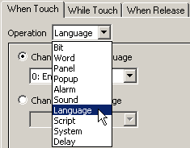
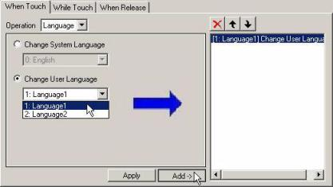
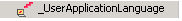
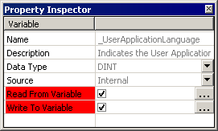
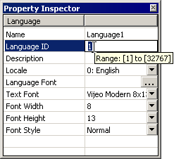
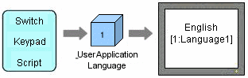
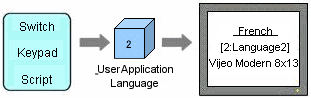

|
|
|
|
|
|
|
|
At run time, you can switch to a different user application language using one of the following three methods:
Method |
Description |
|
|---|---|---|
From the Vijeo-Designer Runtime Configuration Menu |
Open the Vijeo-Designer Runtime Configuration menu on each target machine to switch the user application language. |
|
With a Switch |
With a switch, you can change the user application language. |
|
With a System Variable |
Change using a keypad or script |
Write a value to the _UserApplicationLanguage system variable using a keypad or script. |
Change from the equipment |
Write a value from the equipment to Read From that is assigned to the _UserApplicationLanguage system variable. |
|

If you change the system language at run time, and then either restart run time or reboot the target machine, the language will default to the one specified in the Vijeo-Designer Runtime Configuration menu.
Download
a project to the target machine, and then start run time.
For information about downloading projects and starting run time, see
Section 25.6, Downloading
the Project.
Touch
the top-left corner of the HMI panel to open the Vijeo-Designer Runtime
Configuration menu, and in the System tab, touch Language.
For details about the Runtime Configuration menu, see Section 26.1,
Configuration Menu.

Select the language that you want to use as the User Application language.

Click OK to change the user application language.
To change the user application language at run time, you can use a switch or a drawing set up with Touch Animation.
On the Graphical Objects toolbar, click the Switch icon and select Switch.

On the panel, draw the area of the switch and the Switch Settings dialog box opens.

In the General tab, click either the When Touch tab or the When Release tab, and in the Operation list, select Language.

Select Change User Language, then select the language displayed by the switch.

Click Add to add the setting to the touch operation.
Customize the attributes of the switch as necessary, then click OK.

For details about switches, see Section 9.2, Creating Switches.
If you want to use a graphical
object instead of a switch, set up Touch Animation.
For details, see Section 9.2.7, Creating
a Custom Switch.
To switch languages from the equipment or scripts, use the _UserApplicationLanguage system variable.
With a Script or a Keypad
To change a user application language, you can use a script or a keypad to write a value directly to the _UserApplicationLanguage system variable.
By writing the Language ID (specified in the language properties) to the _UserApplicationLanguage system variable, the user application language changes.


When you use a switch set up with a change user application language operation, the value stored in the _UserApplicationLanguage system variable is updated to the specified Language ID.
The equipment cannot write a value directly to the _UserApplicationLanguage system variable.
To change the user application language from the equipment, first create an external variable. Assign the device address to the external variable, then assign that variable to the _UserApplicationLanguage system variable is Read From field. When you write a value to the Read From variable, the user application language will change.
In the Variable Editor, click the System Variable
icon  to display system variables.
to display system variables.
Select _UserApplicationLanguage from the list of system variables.

In the _UserApplicationLanguage properties set Assign Variable to Enabled and specify integer variables in the Read From and Write To fields.


Write To stores the Language ID number that is currently displayed. If you write a value to the Write To variable from the equipment, the value of the _UserApplicationLanguage system variable still does not change.
On the equipment use a program to write the Language ID number to the device address.
You can check the Language ID associated with each language in the language properties.


You can assign different external variables to the Read From and Write To fields.
If you write a Language ID that does not exist to the Read From variable, the user application language will not change.
The panel changes only if there is a change in the Read From variable. If the same value is written, the panel will not change.
You cannot assign system variables to the Read From and Write To fields. If you try to assign system variables, an error message will display.
There are two ways to change the user application language—1) from the equipment or 2) by using a switch, keypad, or script at the same time.
Method 1: Switch system language using a switch, keypad, or script. The panel changes when a value is written to the system variable _UserApplicationLanguage.

Method 2: Switch user application language from the equipment. The panel changes when a value is written to the Read From variable.

If the above two methods are used simultaneously, the value in the _UserApplicationLanguage and the Read From variable may not match. In this case, there is a possibility — change the user application language may not be changed (see following example):
Using the equipment and the switch method
simultaneously to change user application languages.
First, create two user application languages: [1:Language1] (English) and
[2:Language2] (French). Create an external variable,set up with the device
address D100. Assign that variable to the _UserApplicationLanguage system
variable's Read From property.
Write 1 to the device address D100, which changes the user application language to English. At this time, the value 1 is stored in the _UserApplicationLanguage variable.
Write 2 to the _UserApplicationLanguage using a switch, script, or keypad, which changes the user application language to French.

The user application language is set to French, however, the value in the device address[D100] and the associated Vijeo-Designer variable remain at 1.
Write the value 1 to D100 again from the equipment. The user application language does not change, because there is no change to the value.

To change the user application language correctly, add the following script.
Create an action script with the following properties:
Trigger Type: Conditional
Trigger Variable: _UserApplicationLanguage (system variable)
Trigger: On Data Change
Create the following script. In this example, Integer01 is used as the integer variable for the Read From variable.
int a=0,b=0;
// Get the value of the // User Application variable a=_UserApplicationLanguage.getIntValue();
// Get the current value of the // Read From variable b=Integer01.getIntValue();
// If a and b are not equal if(a!=b) { // Write the _UserApplicationLanguage // value to the Read From variable Integer01.write(a); } |